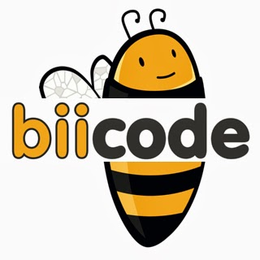
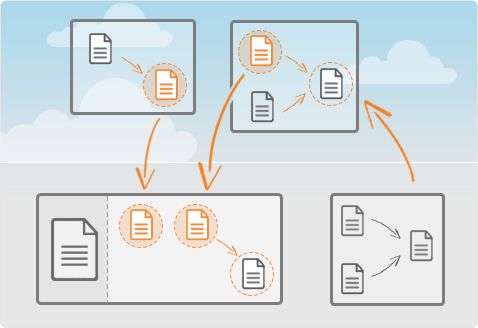

We have a big problem. We have miserably failed to explain the core value proposition of biicode: a file-based dependency manager. We have tried to communicate it in the homepage, in features landing pages, videos, etc. While we certainly are growing, it is also true that not as fast as we would like.
There are many reasons that explain this: People understand that we are a dependency manager for C/C++, but also realize that we still don’t have premium accounts (for private code), in-house deployment or that we’re not open-source. This is all true, we are working in all these features, including going open-source regarding which we will soon announce something relevant. But we think these are not reasons (stoppers) enough to not engage with the platform now, try it, check how it works, give feedback to help define the tool to your needs.
We believe that the main problem is that we didn’t explain properly what makes biicode so special, and we failed because we have used the wrong channels. Here, I will explain it with the language we, developers, all love: source code.

Hands into the file-based dependency manager
I have recently written about how to use ZMQ and protocol buffers with biicode. Here I will develop a client-server application which components can be very easily reused individually in new projects, without having to write a single line of configuration or having to worry about packaging or installing. [If you want to try it on the go just download biicode HERE]
Stop talking, show me the code!
client.h
1 2 3 4 5 6 7 8 9 10 11 12 13 14 15 | #pragma once #include "diego/zmqcpp/zmq.hpp" #include "person.pb.h" #include <string> #include <iostream> class Client{ public: Client(const char* address); void send(const Person& person); private: zmq::context_t context; zmq::socket_t socket; }; |
client.cpp
1 2 3 4 5 6 7 8 9 10 11 12 13 | #include "client.h" Client::Client(const char* address) : context(1), socket(context, ZMQ_PAIR){ socket.connect(address); } void Client::send(const Person& person){ std::string msg_str; person.SerializeToString(&msg_str); // create a zmq message from the serialized string zmq::message_t request(msg_str.size()); memcpy((void *)request.data(), msg_str.c_str(), msg_str.size()); socket.send(request); } |
The person.pb.h and person.pb.cc files are generated with the “protoc” binary from the person.proto, as explained in our docs.
person.proto
1 2 3 4 5 | message Person { required string name = 1; optional string phone = 2; optional string email = 3; } |
We will create a simple client application that just creates a Person object, serialize and send it to the server.
clientapp.cpp
1 2 3 4 5 6 7 8 9 10 11 12 13 14 15 16 17 18 | #include "client.h" int main () { GOOGLE_PROTOBUF_VERIFY_VERSION; Person person; //fill a person data person.set_name("john"); person.set_email("john@mycompany.com"); person.set_phone("1234567"); Client client("tcp://localhost:5555"); client.send(person); // Optional: Delete all global objects allocated by libprotobuf. google::protobuf::ShutdownProtobufLibrary(); return 0; } |
The server application will continuously receive Person data from clients and send them to a SQLite database.
severapp.cpp
1 2 3 4 5 6 7 8 9 10 11 12 13 14 15 16 17 18 19 20 21 22 23 24 25 26 27 28 29 30 31 32 33 | #include "diego/zmqcpp/zmq.hpp" #include <string> #include <iostream> #include "person.pb.h" #include <google/protobuf/text_format.h> #include "server.h" #include <sqlite/sqlite/include/SQLiteCpp/SQLiteCpp.h> int main() { SQLite::Database db("server.db", SQLITE_OPEN_READWRITE | SQLITE_OPEN_CREATE); std::cout << "SQLite database file '" << db.getFilename().c_str() << "' opened successfully\n"; // Create a new table with an explicit "id" column aliasing the underlying rowid db.exec("DROP TABLE IF EXISTS test"); db.exec("CREATE TABLE test (id INTEGER PRIMARY KEY, name TEXT, email TEXT, phone TEXT)"); // Prepare our context and socket Server server("tcp://*:5555"); while (true) { Person person = server.receive(); std::string text_str; SQLite::Statement query(db, "INSERT INTO test VALUES (NULL, ?, ?, ?)"); query.bind(1, person.name()); query.bind(2, person.email()); query.bind(3, person.phone()); int nb = query.exec(); google::protobuf::TextFormat::PrintToString(person, &text_str); std::cout << text_str << std::endl; } return 0; } |
with the server being:
server.h
1 2 3 4 5 6 7 8 9 10 11 12 13 14 15 | #pragma once #include "diego/zmqcpp/zmq.hpp" #include "person.pb.h" #include <string> #include <iostream> class Server{ public: Server(const char* address); Person receive(); private: zmq::context_t context; zmq::socket_t socket; }; |
server.cpp
1 2 3 4 5 6 7 8 9 10 11 12 13 14 | #include "server.h" Server::Server(const char* address) : context(1), socket(context, ZMQ_PAIR){ socket.bind(address); } Person Server::receive(){ zmq::message_t request; // Wait for next request from client socket.recv(&request); Person person; std::string msg_str(static_cast<char*>(request.data()), request.size()); person.ParseFromString(msg_str); return person; } |
Building all this code is pretty simple and can be done with biicode without any configuration, remember to generate the person.pb files with “protoc”, check the documentation here.
1 2 3 4 5 6 7 8 | $ bii init zmqapp $ cd zmqapp $ bii new diego/clientserver //you can use your username instead of diego //copy the above files into the zmqapp/blocks/diego/clientserver folder $ bii find // to find and retrieve missing dependencies. $ bii cpp:configure -G “Visual Studio 12” //only if in windows $ bii cpp:build //launch server, then client in another console |
So far, biicode is a “smart” dependency manager, that figures out which dependencies it needs from #include directives (of course, you can also define them in requirements.bii file). In this case, ZeroMQ, protobufs and SQLite.
But the key point is not that. It is how easy you can reuse individual components from this project into new projects, how simple you can share it with the world without having to worry about packaging or installers. The first step is to upload to biicode:
1 | $ bii publish |
This command will create a DEV version (which means that it is not frozen, you can overwrite it; there are other BETA, STABLE tags that freezes a version) in biicode, you can go to www.biicode.com/yourusername and check it.
Imagine that the server side is developed to run only in X systems, but it will not build in Windows, due to some non portable code. In this example we have used SQLite which is portable. In any case, it is clear that if we want to develop a new client application we do not need to build the server or depend on SQLite at all. Lets build such a client:
1 2 3 4 | $ cd .. $ bii init zmqnewclient $ cd zmqnewclient $ bii new yourusername/newclient |
Copy the following code inside the “blocks/yourusername/newclient” folder:
yourClientapp.cpp
1 2 3 4 5 6 7 8 9 10 11 12 13 14 15 16 17 18 | #include "yourusername/clientserver/client.h" int main () { GOOGLE_PROTOBUF_VERIFY_VERSION; Person person; //fill a person data person.set_name("john"); person.set_email("john@mycompany.com"); person.set_phone("1234567"); Client client("tcp://localhost:5555"); client.send(person); // Optional: Delete all global objects allocated by libprotobuf. google::protobuf::ShutdownProtobufLibrary(); return 0; } |
And execute:
1 2 3 4 | $ bii find $ bii cpp:configure -G “Visual Studio 12” //only if in windows, skip otherwise $ bii cpp:build //launch server from the other project in another console, then this client |
Let’s explain what a file-based dependency manager is
Now the key point! Go to the project “deps” folder, and check what is there: There is no server code, and there is no SQLite code!! And we have done it without a single line of configuration. How is this done?
Biicode is a FILE BASED dependency manager. That lets amazing things to happen, such as allowing to reuse individual files from previous projects without having to worry about packaging, setup or installs. Biicode tracks which files depends on which files, and use it to automatically define build targets, or manage dependencies accordingly. For example, you could just reuse the “Person” object from the previous example in another project, and you will not depend on ZMQ or SQLite at all, as those files do not depend on them. And this is only the beginning, with this file based approach you can also do many other amazing things, stay tuned for next posts.
We believe this is indeed a new paradigm for dependency management. We are still in beta, releasing based on our users feedback almost every week, towards such a system that could rock for all of us as developers. That means that we are not perfect, as I told you we are working hard and defining the best possible roadmap for our community, including open-sourcing the code and building all the necessary tools for production environments.
If you feel that this makes sense, give feedback, spread the word as much as possible.
Related Posts
Pingback: biicode @ Spain Startup South Summit - biicode Blog()
Pingback: biicode is going open source: join us!! | biicode Blog()
Pingback: biicode 2.0 is out! - biicode Blog()
Pingback: Lessons learnt adapting CppMicroServices - biicode Blog()